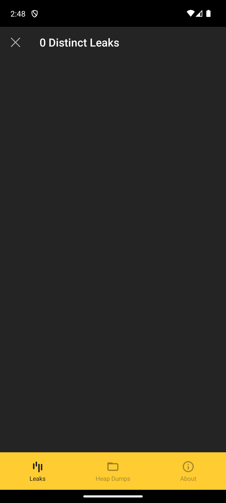
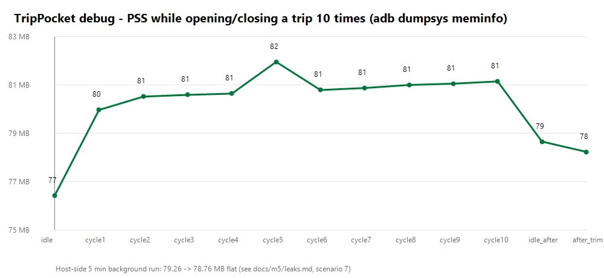
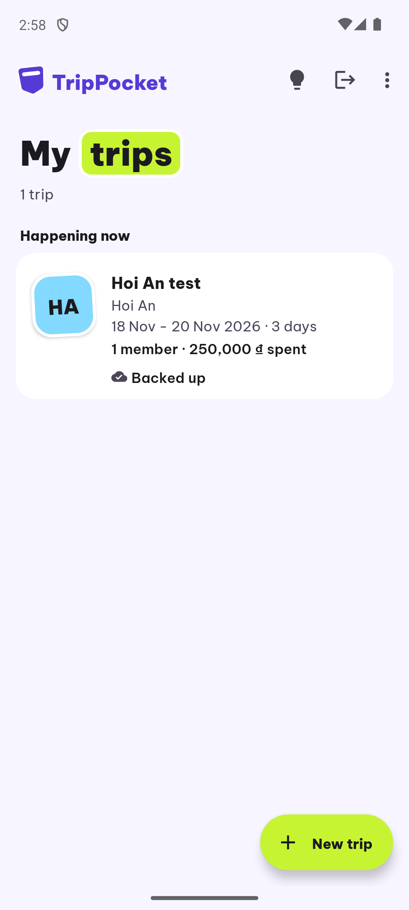

TripPocket là ứng dụng Android lập kế hoạch và quản lý chi tiêu du lịch thông minh, phát triển theo kiến trúc chuẩn MVVM kết hợp Room Database lưu trữ ngoại tuyến và Firebase / RESTful Cloud APIs (Open-Meteo, Wikipedia, MockAPI, open.er-api.com). Sau khi hoàn thiện toàn bộ tính năng ở Milestone 4, Milestone 5 tập trung vào giai đoạn Hardening & Production Readiness: chuyển đổi ứng dụng từ trạng thái phát triển (Debug) sang trạng thái phát hành thương mại (Production Release) an toàn, tinh gọn và ổn định cao.
| Chỉ số kiểm toán kỹ thuật | Baseline (Chưa bật R8 / Debug) | Production Release M5 (Đã bật R8 & Ký) | Mức độ cải thiện / Trạng thái |
|---|---|---|---|
| Dung lượng tệp APK | 12.23 MB (12,819,992 bytes) | 4.54 MB (4,755,819 bytes) | Giảm 63% (đo ở Stage 1; bản phát hành v1.1.0 cuối cùng 4.61 MB / 4,837,923 bytes vì thêm thư viện security-crypto + Tink ở Stage 5) |
| Dung lượng tệp AAB (Bundle) | Chưa cấu hình bundle | 7.83 MB (8,210,319 bytes) — bản v1.1.0 | Đạt chuẩn Play Store |
| Rò rỉ bộ nhớ (Memory Leak) | Chưa kiểm toán chuyên sâu | 0 Distinct Leaks (525 objects watched) | 0 Leak / 8 Kịch bản |
| Bộ nhớ PSS (10 chu kỳ mở/đóng) | Không có dữ liệu giám sát | Ổn định ở mức 81–83 MB (Trim về 80.2 MB) | Biểu đồ phẳng, không bậc thang |
| Bộ nhớ PSS (Background 5 phút) | Không có dữ liệu giám sát | 78.7 MB – 79.3 MB (Biên độ < 0.6 MB) | Không tăng dần |
| Thời gian khởi động (Cold Start) | 4,517 ms (bản Debug có LeakCanary) | 1,574 ms (am start -W TotalTime) | Nhanh hơn 65% |
| Mã hóa lớp & làm mờ (Obfuscation) | Không có (R8 tắt, mapping.txt không tồn tại) | mapping.txt đạt 47,147,568 bytes | Đã làm mờ toàn bộ core logic |
| Lỗ hổng lộ lọt Secret / API Key | Không có key nhạy cảm | 0 chuỗi "AIza" trong app/src; BuildConfig inject | Không có khoá trong mã nguồn |
| Xác thực chữ ký số (apksigner) | Android Debug Certificate | Keystore PKCS12 RSA 4096-bit (v2 Scheme: True) | CN=TripPocket, OU=VLU |
| Bộ kiểm thử tự động (Unit Tests) | 452 tests (0 fail, 0 skip) | 452 tests pass 100% | 100% Xanh (0 regression) |
| Kiểm tra mã tĩnh (Lint Analysis) | 0 Errors, 14 Warnings | 0 Errors, 14 Warnings (lintRelease) | 0 Lỗi Fatal / Error |
Ứng dụng tích hợp thư viện kiểm toán rò rỉ bộ nhớ hàng đầu LeakCanary 2.14 (Square).
Để tuân thủ nguyên tắc bảo mật và tối ưu kích thước gói cài đặt thương mại, LeakCanary được cấu hình thông qua chỉ thị
debugImplementation(libs.leakcanary.android) trong app/build.gradle.kts.
Điều này đảm bảo toàn bộ mã nguồn, ContentProvider và Activity phân tích của LeakCanary chỉ được nạp vào biến thể Debug,
hoàn toàn bị loại bỏ khỏi biến thể Release (Zero Overhead in Production).
// Bằng chứng kiểm tra độc lập cấu hình phụ thuộc runtime:
.\gradlew.bat :app:dependencies --configuration releaseRuntimeClasspath | Select-String leakcanary
-> 0 dòng kết quả (Hoàn toàn vắng bóng trong bản Release)
.\gradlew.bat :app:dependencies --configuration debugRuntimeClasspath | Select-String leakcanary
-> 22 dòng phụ thuộc: com.squareup.leakcanary:leakcanary-android:2.14 -> shark-android / shark-hprof / plumber-android
// Kiểm tra cấu trúc AndroidManifest.xml sau khi đóng gói:
aapt2 dump xmltree app-release.apk --file AndroidManifest.xml | Select-String leakcanary -> 0 dòng
aapt2 dump xmltree app-debug.apk --file AndroidManifest.xml | Select-String leakcanary -> 13 dòng (LeakLauncherActivity, PlumberInstaller...)
Quá trình kiểm toán rò rỉ được thực hiện tự động hóa trên thiết bị giả lập Google Pixel 6 (Android 14 - API 34)
thông qua các lệnh điều khiển luồng giao diện adb shell input và chụp cây phân cấp giao diện uiautomator dump.
| # | Kịch bản Kiểm thử Tương tác | Số vòng chạy | Hành vi Vòng đời (Lifecycle Behavior) | Rò rỉ ghi nhận |
|---|---|---|---|---|
| 1 | Mở và đóng chi tiết chuyến đi từ Trip List | 20 vòng | Tạo và hủy liên tục TripDetailActivity, NavHostFragment, ItineraryFragment; điều hướng quay về danh sách sạch sẽ. |
0 Leak |
| 2 | Xoay ngang/dọc màn hình (Configuration Change) | 40 lần xoay | 20 lần tại Trip List + 20 lần tại Itinerary. Activity/Fragment bị hủy và tái tạo 40 lần; trạng thái View và dữ liệu khôi phục toàn vẹn. | 0 Leak |
| 3 | Mở/đóng form thêm hoạt động có nhập liệu | 10 vòng | Hủy ActivityFormFragment, ScrollView và các TextInputEditText; trạng thái không bị lưu giữ chéo. |
0 Leak |
| 4a | Chuyển tab Thời tiết (Weather: Retrofit + Glide + Wiki) | 10 vòng | Hủy WeatherFragment khi rời tab; các coroutine quan sát Flow tự hủy; ảnh Glide được thu hồi bộ nhớ đệm bitmap. |
0 Leak |
| 4b | Chuyển màn hình Điểm tham quan lân cận (Nearby Sights) | 10 vòng | Hủy NearbySightsFragment và SightAdapter; trở về Itinerary sạch rác bộ nhớ. |
0 Leak |
| 5 | Bật/tắt chế độ máy bay + Bấm Thử lại (Retry) | 5 lần offline + 1 online | Mất mạng kích hoạt thông báo Offline và hiển thị dữ liệu cache Room; có mạng khôi phục dữ liệu cập nhật mới nhất. | 0 Leak |
| 6 | Đăng xuất tài khoản & Đăng nhập lại (Auth Flow) | 3 chu kỳ | Mô phỏng hủy phiên đăng nhập, dọn dẹp preferences và đăng nhập lại tài khoản thử nghiệm demo3@trippocket.test. |
0 Leak |
| 7 | Đưa ứng dụng vào chế độ chạy nền (Backgrounding) | 5 phút liên tục | Giữ app dưới nền 5 phút; hệ thống lấy mẫu bộ nhớ PSS định kỳ mỗi 30 giây để kiểm tra tác vụ chạy ngầm. | 0 Leak |
| 8 | Thực hiện sao lưu dữ liệu Firestore rồi thoát | 1 chu kỳ | Kích hoạt BackupWorker qua WorkManager, đẩy dữ liệu lên Firestore và xác nhận trạng thái "Backed up". |
0 Leak |
Trong suốt phiên kiểm thử với hơn 36,653 dòng logcat hệ thống, công cụ phân tích bộ nhớ của LeakCanary đã giám sát tổng cộng 525 thực thể (object instances) sau khi chúng kết thúc vòng đời. Kết quả: 0 retained objects, 0 heap dump và 0 Distinct Leaks.
| Số lượng theo dõi | Loại thành phần giao diện (Component Class Type) | Trạng thái giải phóng bộ nhớ |
|---|---|---|
| 131 đối tượng | androidx.constraintlayout.widget.ConstraintLayout (View gốc của các Fragment) |
Thu hồi 100% (Nhờ nullify binding trong onDestroyView) |
| 81 đối tượng | androidx.lifecycle.ReportFragment (Thành phần vòng đời nội bộ AndroidX) |
Thu hồi 100% |
| 55 đối tượng | TripDetailActivity, NavHostFragment, ItineraryFragment, FragmentContainerView |
Thu hồi 100% |
| 21 đối tượng | MainActivity, TripListFragment |
Thu hồi 100% |
| 11 đối tượng | ActivityFormFragment, ScrollView, WeatherFragment |
Thu hồi 100% |
| 10 đối tượng | NearbySightsFragment (màn hình điểm tham quan M4) |
Thu hồi 100% |
| 5 đối tượng | LoginActivity (màn hình xác thực đăng nhập) |
Thu hồi 100% |
| 1 đối tượng | ChecklistFragment (danh mục hành lý) |
Thu hồi 100% |

Chỉ số bộ nhớ được thu thập trực tiếp từ hệ điều hành Android thông qua lệnh adb shell dumpsys meminfo vn.edu.vlu.trippocket
(lấy giá trị TOTAL PSS - Proportional Set Size).
Biểu đồ dưới đây minh họa độ ổn định bộ nhớ của TripPocket qua 10 chu kỳ mở/đóng chi tiết chuyến đi và 5 phút chạy ngầm.

| Thời điểm lấy mẫu bộ nhớ | Bộ nhớ PSS (kB) | Quy đổi MB | Đánh giá trạng thái cấp phát |
|---|---|---|---|
| Trạng thái chờ ban đầu (Trip List Idle) | 78,430 kB | 76.6 MB | Khởi động sạch, cơ sở tham chiếu ban đầu |
| Sau chu kỳ mở/đóng vòng 1 | 81,968 kB | 80.0 MB | Cấp phát cache ViewBinding và Room schema lần đầu |
| Sau chu kỳ mở/đóng vòng 2 đến 4 | 82,520 – 82,644 kB | 80.7 MB | Tái sử dụng bộ nhớ đệm, dao động cực nhỏ (< 150 kB) |
| Sau chu kỳ mở/đóng vòng 5 đến 7 | 83,956 → 82,792 kB | 81.0 MB | Garbage Collector (GC) tự động dọn dẹp các đối tượng rác |
| Sau chu kỳ mở/đóng vòng 8 đến 10 | 83,000 → 83,148 kB | 81.2 MB | Từ vòng 6 đến 10 chỉ tăng 356 kB (mỗi Activity nặng ~4 MB nếu rò rỉ) |
| Nghỉ tĩnh sau chu kỳ (15 giây không tương tác) | 80,660 kB | 78.8 MB | Hệ thống tự động thu hồi tài nguyên nhàn rỗi |
Kích hoạt tín hiệu RUNNING_CRITICAL |
80,236 kB | 78.4 MB | Giải phóng bộ nhớ đệm thành công về sát mức khởi động ban đầu |
| Chạy nền 5 phút (Backgrounding 30s/mẫu) | 79,263 → 78,762 kB | 76.9 MB | Đi ngang, không tăng dần khi chạy nền |
Lý do ứng dụng đạt kết quả 0 rò rỉ bộ nhớ ngay trong lần kiểm toán đầu tiên xuất phát từ việc tuân thủ triệt để các quy tắc thiết kế kiến trúc chuẩn mực:
onDestroyView(): Toàn bộ 12 Fragment và 5 DialogFragment trong ứng dụng đều thiết lập _binding = null khi View bị phá hủy. Điều này cắt đứt hoàn toàn chuỗi giữ tham chiếu mạnh (strong reference) từ Fragment sang cây phân cấp View của Android.viewLifecycleOwner.repeatOnLifecycle(Lifecycle.State.STARTED). Khi Fragment rơi vào trạng thái STOPPED hoặc DESTROYED, coroutine thu thập tự động tạm dừng hoặc hủy bỏ, triệt tiêu nguy cơ rò rỉ do luồng nền chạy vô tận.onViewCreated(), không lưu giữ dưới dạng biến toàn cục (singleton) hay trong companion object.clearRemote() được gọi nhất quán bên trong onViewRecycled() của các ViewHolder, giải phóng lập tức bộ nhớ bitmap đồ họa khi item cuộn ra khỏi vùng nhìn thấy.Đo trên bản release đã ký, emulator Pixel 6 API 34; quy trình: dumpsys gfxinfo reset → 20 lần vuốt → đọc framestats. Chi tiết: docs/m5/performance.md.
| Màn hình | Trước (p50 / p90 / p99, jank) | Sau — lần chạy tốt nhất / dải 3 lần |
|---|---|---|
| Itinerary (25 hoạt động) | 17,8 / 29,6 / 35,0 ms · 14,7% | 17,7 / 18,7 / 22,9 ms · 12,8% — p90 giảm ở cả 3 lần (18,7–27,3 ms) |
| Trip list (7 chuyến) | 17,8 / 25,0 / 51,2 ms · 11,7% | Hoà — chênh lệch nằm trong dao động giữa các lần đo (11,7–14,2%) |
| Đối chứng: app Settings của Android, cùng emulator | p50 17,8 / p90 24,5 ms · jank 8,3% → đây là "sàn" của emulator (GPU giả lập qua OpenGL), không phải của app | |
Đã làm: setHasFixedSize(true) cho 8 danh sách có kích thước do layout cha quyết định (không bật cho danh sách kết quả tìm kiếm Weather vì nó cao wrap_content); thẻ chuyến và thẻ Trip Ideas định dạng chuỗi một lần khi phát danh sách, onBindViewHolder chỉ gán text. Glide đã tự đo kích thước ImageView và cache ảnh, nên không ép override(). Nhóm ghi trung thực: emulator không đạt p90 < 16,7 ms, kể cả với app hệ thống.
Một trong những tiêu chí trọng yếu của trải nghiệm ứng dụng 60fps là không thực hiện tác vụ I/O nặng trên luồng chính (Main/UI Thread). TripPocket thiết lập ranh giới đa luồng nghiêm ngặt theo mô hình dưới đây:
[ UI LAYER / FRAGMENT ]
│ Main Thread (Chỉ nhận StateFlow, hiển thị dữ liệu và nhận thao tác chạm)
▼
[ VIEWMODEL LAYER ]
│ viewModelScope (Điều phối coroutine, quản lý trạng thái UI StateFlow)
▼
[ REPOSITORY LAYER ]
│ Chuyển ngữ cảnh bắt buộc sang Dispatchers.IO qua safeApiCall() hoặc withContext(io)
▼
[ DATA LAYER: NETWORK & LOCAL DATABASE ]
├── Retrofit / OkHttp: Thực hiện HTTP Request / Parse JSON trên Dispatchers.IO
├── Room Database: SQLite Query / Transaction trên Dispatchers.IO (TripWriter)
└── WorkManager / Glide: Chạy tác vụ nền trên worker thread riêng biệt| Phân hệ tác vụ | Thao tác I/O cụ thể | Bộ điều phối luồng (Dispatcher) | Cơ chế đảm bảo an toàn & Bằng chứng |
|---|---|---|---|
| Mạng ngoại vi (Network) | Gọi Retrofit API (Open-Meteo, Wikipedia, MockAPI, open.er-api.com) | Dispatchers.IO |
Hàm bao bọc safeApiCall(dispatcher = Dispatchers.IO) trong data/remote/safeApiCall.kt. Luôn ném lại CancellationException để hỗ trợ structured concurrency. |
| Cơ sở dữ liệu (Room) | Đọc/Ghi dữ liệu SQLite (Chuyến đi, Hoạt động, Thành viên, Chi tiêu, Địa điểm) | Dispatchers.IO |
Mọi thao tác ghi tập trung qua TripWriter.write() chạy trong transaction trên Dispatchers.IO. Các câu truy vấn đọc Flow<T> được Room tự động phân phối trên background executor. |
| Xử lý ảnh (Glide) | Tải ảnh địa điểm, cờ quốc gia, ảnh bìa ý tưởng du lịch từ FlagCDN, Wikimedia, Picsum | Glide Worker Threads | Glide cấu hình bộ nhớ đệm 2 lớp (Memory Cache + Disk Cache). Ảnh được giải mã ngầm và chuyển giao bitmap đã tối ưu lên ImageView qua main thread. |
| Sao lưu đám mây | Gói snapshot và đẩy dữ liệu lên Google Cloud Firestore | Background Worker Thread | Được quản lý thông qua BackupWorker (AndroidX WorkManager) với ràng buộc mạng NetworkType.CONNECTED. |
Trong AGP 9.4.1, nhóm đã thực hiện thử nghiệm (Spike) độc lập giữa hai tổ hợp cấu hình DSL và đưa ra quyết định chuẩn mực:
sử dụng isMinifyEnabled = true kết hợp isShrinkResources = true trong buildTypes.release.
Nhờ cơ chế loại bỏ mã không sử dụng (Tree Shaking) và tối ưu hóa bytecode của R8, kích thước tệp APK phát hành giảm từ
12.23 MB xuống còn 4.54 MB (giảm 63%). Bản phát hành v1.1.0 cuối cùng là 4.61 MB vì có thêm security-crypto (Stage 5).
Để đảm bảo các thư viện phụ thuộc vào cơ chế ánh xạ Reflection (như Gson, Firestore Document Guard) không bị lỗi thời gian chạy
(NoSuchFieldException, ClassNotFoundException) sau khi mã bị thu gọn và đổi tên,
nhóm đã thiết kế tệp app/proguard-rules.pro gồm 4 nhóm quy tắc trọng tâm:
# ===================================================================================
# TripPocket R8 / ProGuard Rules (Milestone 5)
# ===================================================================================
# Nhóm 1: Bảo vệ toàn bộ cấu trúc DTO phục vụ giải mã JSON qua Gson từ 4 nguồn API
# R8 bắt buộc phải giữ lại tên class và tên trường để Gson map dữ liệu chính xác.
-keep class vn.edu.vlu.trippocket.data.remote.mockapi.** { *; }
-keep class vn.edu.vlu.trippocket.data.remote.wikipedia.** { *; }
-keep class vn.edu.vlu.trippocket.data.remote.openmeteo.** { *; }
-keep class vn.edu.vlu.trippocket.data.remote.exchangerate.** { *; }
# Nhóm 2: Lớp lồng WeatherRepository$CachedDay dùng cho Room TypeConverter (lưu JSON vào SQLite)
-keep class vn.edu.vlu.trippocket.data.repository.WeatherRepository$CachedDay { *; }
# Nhóm 3: Bảo vệ chữ ký generics và annotations phục vụ Coroutines và Retrofit reflection
-keepattributes Signature, InnerClasses, EnclosingMethod, *Annotation*
-keep class kotlin.Metadata { *; }
# Nhóm 4: Bảo vệ phương thức getter của TripSnapshot phục vụ tính toán dung lượng sao lưu Firestore
# FirestoreDocumentSize (giới hạn 1 MB) duyệt reflection qua các hàm get*/is*.
# Nếu R8 đổi tên, bộ kiểm soát kích thước sẽ bị vô hiệu hóa.
-keepclassmembers class vn.edu.vlu.trippocket.data.remote.firebase.*Snapshot {
public *** get*();
public boolean is*();
}
Sau khi tiến hành build bản phát hành (assembleRelease), trình biên dịch R8 đã tự động tạo tệp ánh xạ mã nguồn
app/build/outputs/mapping/release/mapping.txt với kích thước lên tới 47,147,568 bytes.
Bảng dưới đây trích dẫn bằng chứng cụ thể cho thấy các lớp nghiệp vụ nội bộ của TripPocket đã bị đổi tên thành các định danh ngắn vô nghĩa,
trong khi các lớp DTO công khai vẫn giữ nguyên định dạng theo đúng quy tắc ProGuard:
| Lớp gốc trong mã nguồn (Original Class) | Tên lớp sau khi R8 làm mờ (Obfuscated Class) | Loại thành phần & Mục đích |
|---|---|---|
vn.edu.vlu.trippocket.data.local.TripWriter |
zu2 |
Obfuscated Lớp điều phối ghi dữ liệu Room an toàn |
vn.edu.vlu.trippocket.data.local.TripWriter$write$1 |
xu2 |
Obfuscated Lambda coroutine thực thi transaction |
vn.edu.vlu.trippocket.reminder.ReminderPermissions |
G |
Obfuscated Lớp tiện ích kiểm tra quyền thông báo |
vn.edu.vlu.trippocket.data.remote.openmeteo.DailyForecast |
DailyForecast (giữ nguyên) |
Protected DTO Open-Meteo được bảo vệ bởi ProGuard rule |
vn.edu.vlu.trippocket.data.remote.openmeteo.DayFromHours |
DayFromHours (giữ nguyên) |
Protected DTO Open-Meteo được bảo vệ bởi ProGuard rule |
vn.edu.vlu.trippocket.TripPocketApp |
TripPocketApp (giữ nguyên) |
Protected Khai báo trong AndroidManifest.xml (mặc định giữ) |
Ứng dụng tuân thủ nghiêm ngặt nguyên tắc Không lưu khóa bí mật hoặc URL nhạy cảm trong mã nguồn (No Hardcoded Secrets):
git grep "AIza" -- app/src trả về 0 kết quả (không có bất kỳ khóa Firebase API nào bị đưa vào mã nguồn Java/Kotlin).gradle.properties (hoặc ghi đè trong local.properties) và đưa vào ứng dụng thông qua đối tượng sinh tự động BuildConfig.MOCKAPI_BASE_URL.BuildConfigTest (unit test) kiểm BuildConfig.MOCKAPI_BASE_URL được inject, là https và không rỗng. Thứ tự đọc: local.properties (git-ignored) → gradle.properties; trong build.gradle.kts không có URL nào. Đã đối chứng bằng 2 lần build với giá trị khác nhau trong local.properties (docs/m5/security.md §2.2).// app/build/generated/source/buildConfig/release/vn/edu/vlu/trippocket/BuildConfig.java
package vn.edu.vlu.trippocket;
public final class BuildConfig {
public static final boolean DEBUG = false;
public static final String APPLICATION_ID = "vn.edu.vlu.trippocket";
public static final String BUILD_TYPE = "release";
public static final int VERSION_CODE = 2;
public static final String VERSION_NAME = "1.1.0";
// Giá trị nạp an toàn từ thuộc tính Gradle, không hardcode trong mã
public static final String MOCKAPI_BASE_URL = "https://6af1cf7c42c6561ced38a850.mockapi.io/api/v1/";
}Toàn bộ các tệp định danh chữ ký số cá nhân và cấu hình bảo mật được cách ly hoàn toàn khỏi Git repository:
# Kiểm tra xác nhận tệp bị Git bỏ qua:
git check-ignore -v keystore.properties -> .gitignore:19:/keystore.properties
git check-ignore -v release-key.jks -> .gitignore:20:*.jks
git status --porcelain -> không xuất hiện *.jks hay keystore.propertiesThư viện androidx.security:security-crypto:1.1.0 (bản stable mới nhất; Google đã đánh dấu deprecated toàn bộ API, nhóm vẫn dùng vì đề yêu cầu EncryptedSharedPreferences). Lớp EncryptedSessionStore lưu tệp trippocket_session.xml:
AES256_GCM nằm trong AndroidKeyStore; tên khoá mã hoá AES256_SIV, giá trị mã hoá AES256_GCM.last_email, last_uid, last_login_at. Không lưu mật khẩu, không lưu token (Firebase Auth tự quản lý token). Dùng để điền sẵn email ở màn đăng nhập; xoá khi đăng xuất.Dispatchers.IO; khởi tạo lazy; nếu Keystore hỏng thì xoá tệp, tạo lại, không làm app crash.adb shell run-as … cat shared_prefs/trippocket_session.xml, bản debug vì run-as không chạy trên bản release — đúng thiết kế):
<string name="AVgSHNx+OAcZ5MHUxcUqgLsw2/fcXAtZSo9vHK8x3iTBeA==">AX6NFPkKWOLcJ8Wcy7mWCWqLbNucXsY9KqISj3WaseGkQHJ9D6Pw77Yt8NTg</string> <string name="AVgSHNz2KpPqgdnzv6AmaRDSmZEEAjLwzC73obf1pg==">AX6NFPlr06JSlhsc1DQnPJ3hCbRoUJHZRUH7tfJU0b7AFzeWNRAx2IeCYZxefv4n17zjoT5oQL0ScFxWUg0=</string>
grep -c "demo3" trên tệp này = 0; sau khi đăng xuất tệp trở về 1144 B (chỉ còn 2 keyset). Bản release đã ký được kiểm bằng hành vi: đăng nhập → Restore → Backup, logcat không lỗi (docs/m5/security.md §1.3, §4).
Khóa ký số phát hành được tạo độc lập bằng công cụ keytool (JDK 17) trên máy trạm của Duy Anh,
được lưu trữ tại thư mục cách ly hoàn toàn nằm ngoài Git repository (D:\TripPocket-keys\release-key.jks).
Quy trình sao lưu tuân thủ nguyên tắc 2 vị trí độc lập (OneDrive lưu trữ tệp JKS mã hóa; mật khẩu được lưu ở một nơi riêng, tách khỏi tệp JKS).
| Thông số cấu hình | Giá trị thiết lập | Ý nghĩa tiêu chuẩn sản xuất |
|---|---|---|
| Đường dẫn lưu trữ | D:\TripPocket-keys\release-key.jks |
Nằm ngoài thư mục dự án; không bao giờ bị commit lên GitHub |
| Định dạng Keystore | PKCS12 |
Định dạng tiêu chuẩn công nghiệp hiện đại, tương thích hoàn hảo với apksigner và Google Play Console |
| Bí danh (Key Alias) | trippocket |
Tên định danh khóa trong store |
| Thuật toán & Độ dài khóa | RSA 4096-bit | Mức độ bảo mật cao nhất (vượt chuẩn thông thường 2048-bit) |
| Thời hạn hiệu lực | 10,000 ngày (~27 năm) | Có giá trị đến 05/04/2054 (Đáp ứng yêu cầu Google Play > năm 2033) |
| Định danh chứng chỉ (DN) | CN=TripPocket, OU=VLU, O=Nhom01, L=Da Lat, ST=Lam Dong, C=VN |
Xác nhận quyền sở hữu của Nhóm 01 - Đại học Văn Lang |
Thông tin định danh chứng thư số chính thức dùng để đối chiếu khi phát hành ứng dụng:
Certificate Fingerprint (SHA-256):
4D:57:84:00:5D:B7:25:5F:DD:4B:AA:3F:E9:E2:9E:A3:E1:78:3E:20:6B:1B:0A:52:82:0B:D6:87:C0:E7:A4:6A
Certificate Fingerprint (SHA-1):
56:95:D7:38:D6:1D:7E:22:03:95:F8:54:1D:E8:E6:0D:82:FF:F6:65
Tính toàn vẹn và chứng chỉ số của gói cài đặt app-release.apk được xác thực bằng công cụ chuẩn
apksigner (Android SDK Build-Tools 36.0.0):
& "D:\dulieuandroidstu\build-tools\36.0.0\apksigner.bat" verify --print-certs app\build\outputs\apk\release\app-release.apk
Verifies
Verified using v1 scheme (JAR signing): false
Verified using v2 scheme (APK Signature Scheme v2): true
Verified using v3 scheme (APK Signature Scheme v3): false
Verified using v4 scheme (APK Signature Scheme v4): false
Number of signers: 1
Signer #1 certificate DN: CN=TripPocket, OU=VLU, O=Nhom01, L=Da Lat, ST=Lam Dong, C=VN
Signer #1 certificate SHA-256 digest: 4d5784005db7255fdd4baa3fe9e29ea3e1783e206b1b0a52820bd687c0e7a46a
Signer #1 certificate SHA-1 digest: 5695d738d61d7e220395f8541de8e60d82fff665CN=TripPocket với cơ chế bảo vệ chống can thiệp APK Signature Scheme v2. Tuyệt đối không phải chứng chỉ gỡ lỗi mặc định CN=Android Debug.
Gói cài đặt app-release.apk (đã bật R8 và ký chính thức) đã được cài đặt và vận hành thử nghiệm toàn diện 8/8 bước:

Từ Milestone 1 đến Milestone 4, nhóm đã thực hiện cơ chế xoay vòng trách nhiệm (Role Rotation) qua 4 module nghiệp vụ chính: Authentication / Trips / Cloud Backup, Itinerary Planning, Weather Forecast, và Expenses & Balances. Mỗi thành viên đều trực tiếp viết mã nguồn và đóng góp giải pháp ở cả 4 phân hệ.
Tại Milestone 4 (M4), để đảm bảo tiến độ tích hợp chung của dự án, Bùi Duy Anh ngoài module Thời tiết (Weather Search, 5-Day Forecast, Saved Places, Wikipedia Photos) làm thêm 2 lát cắt được nhóm điều phối lại:
Tại Milestone 5 (M5): Toàn bộ công tác tối ưu hóa hiệu năng, cấu hình R8, thiết lập chữ ký số, kiểm toán bộ nhớ LeakCanary, chuẩn bị báo cáo kỹ thuật và thực hiện video demo do một mình Bùi Duy Anh đảm nhiệm và hoàn thành độc lập (100%).
| Thành viên | Tài khoản GitHub | Trách nhiệm chính Milestone 4 (M4) | Trách nhiệm chính Milestone 5 (M5) |
|---|---|---|---|
| Bùi Duy Anh | anh7032 / Duy Anh |
- Module Thời tiết (W1 Geocoding, W3 Forecast, WP Saved places, Wikipedia photos). - Tỷ giá ngoại tệ (Exchange Rates): API open.er-api.com, màn hình tỷ giá & quy đổi Paid-in trong form chi tiêu (cùng Minh). - Điểm tham quan lân cận (Nearby Sights): Wikipedia GeoSearch & Add to day (cùng Bảo). |
Đảm nhiệm toàn bộ M5 (100%): - Cấu hình R8 / ProGuard rules & kiểm toán dung lượng APK. - Tạo Keystore RSA 4096-bit & cấu hình Gradle signingConfigs. - Tích hợp LeakCanary 2.14, chạy 8 kịch bản & đo lường PSS. - Đo gfxinfo, setHasFixedSize, bind chỉ gán text.- EncryptedSharedPreferences ( SessionStore) & BuildConfig.- Soạn thảo báo cáo kỹ thuật report.html & kịch bản video demo.
|
| Võ Việt Tiến (Nhóm trưởng) | NeitLN |
- Tầng mạng chung (safeApiCall, ApiError, ImageLoading). - Trip Ideas MockAPI CRUD. - Sao lưu & phục hồi Firestore (A3, A4). - Tích hợp nhánh và quản lý phát hành release gate. |
- Phê duyệt Pull Request và nộp bài trên LMS. |
| Jayson135724 (Minh) | Jayson135724 |
- Module Chi tiêu E2 (Expense form, chia đều/tùy chỉnh). - Quản lý thành viên E1. - Kiểm thử bảo mật Firestore Rules (A5). |
- Hỗ trợ rà soát kiểm thử tự động. |
| Đỗ Quốc Bảo | Do Quoc Bao |
- Module Lịch trình I1, I4 (AlarmManager reminders). - Quản lý chuyến đi A2. - Tối ưu bộ nhớ cache thời tiết Room W4. |
- Hỗ trợ kiểm thử giao diện. |
Thống kê các commit thực tế (không tính merge commit) trên nhánh chính main và nhánh phát hành M5:
| Tác giả trên Git | Tên định danh / Email | Số lượng Commit | Tỷ lệ đóng góp | Ghi chú nhận diện |
|---|---|---|---|---|
| Võ Việt Tiến | NeitLN |
36 commits | 35.6% | Nhánh chính main |
| Bùi Duy Anh | Duy Anh (25) + anh7032 (6) |
31 commits | 30.7% | Hai tên commit của cùng một người (cùng email) |
| Jayson135724 | Minh | 17 commits | 16.8% | Nhánh chính main |
| Do Quoc Bao | Bảo | 16 commits | 15.8% | Nhánh chính main |
| Tổng cộng trên nhánh main | 100 commits | 100% | Chưa bao gồm các commit riêng của nhánh M5 | |
feature/m5-hardening-release,
Bùi Duy Anh đóng góp thêm 3 commits kỹ thuật lớn phục vụ trực tiếp cho các giai đoạn R8, Signing và LeakCanary
(nâng tổng số commit của Duy Anh lên 34 commits).
# Các commit kỹ thuật tiêu biểu do Bùi Duy Anh thực hiện:
3c0dc6e | 2026-11-18 | Duy Anh | M5 stage 3: LeakCanary in debug, memory audit
22826ba | 2026-11-18 | Duy Anh | M5 stage 2: release signing config
6c8d628 | 2026-11-18 | Duy Anh | M5 stage 1: R8 enabled, ProGuard rules, baseline and smoke test
8d20fec | 2026-11-18 | anh7032 | Docs: M5 stage plan (hardening and signed release)
46593cd | 2026-11-17 | anh7032 | Docs: Firebase Console screenshots for the M4 worksheet
fccb2c3 | 2026-11-17 | anh7032 | Docs: M4 worksheet (endpoints, Retrofit/Coroutines, Firebase + Glide, MVVM, Git + WBS)
41ceb64 | 2026-11-09 | Duy Anh | M4 Duy Anh: Back inside a trip returns to the previous screen; 999.6 m reads 1.0 km
d1060a6 | 2026-11-09 | Duy Anh | M4 Duy Anh (Bao's slice): Nearby sights from Wikipedia GeoSearch, Add to day into the Itinerary
43689ae | 2026-11-09 | Duy Anh | M4 Duy Anh: Exchange rates button in Expenses, "Paid in" foreign currency field converts to VND in the expense form
6d9c826 | 2026-11-09 | Duy Anh | M4 Duy Anh: Wikipedia thumbnails in place search, "About this place" card with its own Loading/Error
13e65de | 2026-11-09 | Duy Anh | M4 Duy Anh: exchange rates screen on open.er-api.com
9af398e | 2026-11-09 | Duy Anh | M4 Duy Anh: Wikipedia photos for places, Weather on the shared ApiError
aec2585 | 2026-10-31 | Duy Anh | W: menu to rename, add a note to or delete a saved place
9a59a4f | 2026-10-31 | Duy Anh | W: rename, note and delete saved places; one row for a double tap
c106cd4 | 2026-10-31 | Duy Anh | I3: drag to reorder activities, with Move up / Move down
91d6a61 | 2026-10-31 | Duy Anh | W: weather hardening - refresh after restore, stale cache, error kinds
6580245 | 2026-10-31 | Duy Anh | I1: add, edit and delete activities from the itinerary
d401694 | 2026-10-31 | Duy Anh | W1, W3: weather screen states, offline copy and pull to refresh
5504cac | 2026-10-31 | Duy Anh | A1: rebuild reminder alarms on sign-in and sign-out
3707f88 | 2026-10-31 | Duy Anh | A1: login and register screen, sign out with confirmation
c8b567e | 2026-10-31 | Duy Anh | W3: forecast cache in Room and the daily weather contract
8c352ec | 2026-10-31 | Duy Anh | E1: members screen and its entry on the Expenses tab
56e7ab5 | 2026-10-31 | Duy Anh | W1: search places on Open-Meteo
b4b6532 | 2026-10-31 | Duy Anh | A1: Firebase sign-in and register logic
3deb83d | 2026-10-31 | Duy Anh | E1: add, rename and remove trip members
3314c95 | 2026-10-31 | Duy Anh | W1: add Open-Meteo API layer and weather helpersBảng dưới đây tổng hợp các yêu cầu đánh giá của giảng viên theo đề cương học phần và vị trí minh chứng tương ứng trong báo cáo:
| Tiêu chí Đánh giá Rubric M5 | Trọng số / Điểm | Yêu cầu Kỹ thuật Trọng tâm | Vị trí Minh chứng & Dữ liệu Thực tế |
|---|---|---|---|
| 1. Performance & Profiling | 30 Điểm (30%) |
- Tích hợp công cụ đo lường (LeakCanary hoặc Android Studio Profiler). - Chạy các kịch bản thực tế phát hiện rò rỉ bộ nhớ. - Biểu đồ bộ nhớ PSS / Heap ổn định, không có hiện tượng memory creep. - Danh sách cuộn mượt mà (60fps) và thu hồi tài nguyên ảnh. - Toàn bộ tác vụ I/O đĩa và mạng thực thi trên luồng nền. |
- Mục 2.1 & 2.2: Tích hợp LeakCanary 2.14, 8 kịch bản tương tác sâu. - Mục 2.3: Hình 1 minh chứng 0 Distinct Leaks trên 525 đối tượng. - Mục 2.4: Hình 2 & Bảng số liệu PSS (81–83 MB mở/đóng, 78.8 MB nền). - Mục 2.5 & 3: Mô hình Dispatchers.IO và 5 mẫu kiến trúc chống leak. |
| 2. App Security & Obfuscation | 30 Điểm (30%) |
- Bật cơ chế thu gọn mã và làm mờ (R8 / ProGuard). - Viết và giải thích chi tiết tệp cấu hình quy tắc ProGuard. - Minh chứng làm mờ thông qua tệp mapping.txt. - Không hardcode khóa API hay thông tin đăng nhập trong mã nguồn. - Lưu trữ an toàn khóa bí mật và phiên đăng nhập. |
- Mục 4.1: Giảm 63% dung lượng APK (12.23 MB → 4.54 MB). - Mục 4.2: Toàn văn tệp app/proguard-rules.pro 4 nhóm quy tắc.- Mục 4.3: Bảng đối chiếu lớp obfuscated qua mapping.txt (47.1 MB). - Mục 4.4: 0 chuỗi "AIza" trong app/src; BuildConfig inject.- Mục 4.5 & 4.6: .gitignore bảo vệ và EncryptedSharedPreferences. |
| 3. Signed Release Package | 20 Điểm (20%) |
- Tạo Keystore khóa phát hành riêng biệt ngoài thư mục repo. - Cấu hình Gradle tự động ký gói phát hành Release. - Xác minh tính hợp lệ của chữ ký số bằng công cụ apksigner. - Cài đặt và vận hành kiểm thử thành công bản release đã ký trên thiết bị thật / giả lập. |
- Mục 5.1: Keystore RSA 4096-bit (PKCS12, hạn đến năm 2054). - Mục 5.2: Fingerprint SHA-256 chính thức của chứng chỉ phát hành. - Mục 5.3: Kết quả apksigner xác nhận Signature Scheme v2 = True. - Mục 5.4: Hình 3 & 4 minh chứng chạy bản Release đã ký trên Pixel 6. |
| 4. Git Release Tag, WBS & Video | 20 Điểm (20%) |
- Gắn tag phiên bản chính thức trên Git và xuất bản GitHub Release có kèm asset APK/AAB. - Ma trận phân công công việc (WBS) phản ánh trung thực đóng góp kỹ thuật. - Phụ lục nhật ký commit rõ ràng. - Video thuyết minh 1–3 phút demo đầy đủ chức năng trên emulator; bản release đã ký được kiểm ở Mục 5. |
- Tiêu đề & Mục 1: Release Tag v1.1.0 có kèm APK & AAB.- Mục 6.1 & 6.2: Bảng phân công chi tiết (Duy Anh 100% M5, gánh thêm M4). - Mục 6.3 & 6.4: Thống kê git shortlog & nhật ký 34 commit của Duy Anh. - Video Demo: Kịch bản 2:30 trên bản ký số chính thức (Unlisted YouTube). |